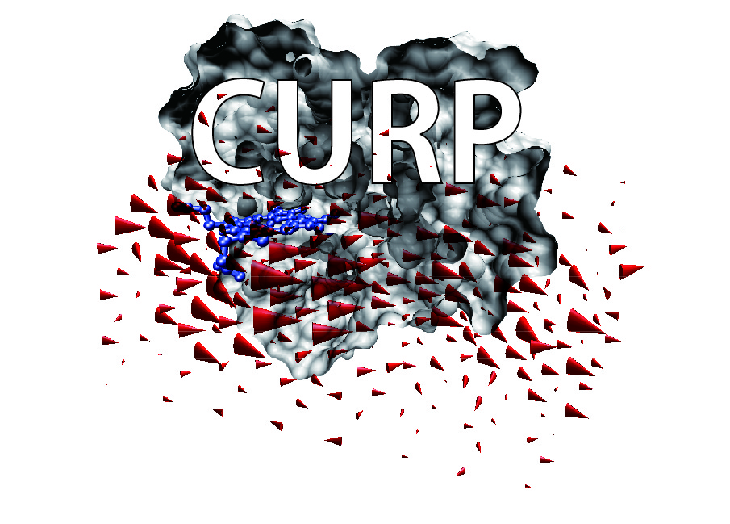

CURP¶
CURP (CURrent calculation for Proteins)
{kind=link}
Download Example (279.6 MB): Analysis of Energy Exchange Network of PDZ3 Domain (JCC (2015))
Download Tips for converting Gromacs topology/trajectory files to Amber format (66 KB)
ver1.1: Takahisa YAMATO, Takakazu ISHIKURA, Kunitaka Ota, Tatsuya SAKAI
ver1.0: Takahisa YAMATO, Takakazu ISHIKURA, Yuki IWATA
ver0.1: Takahisa YAMATO, Tatsuro HATANO, Takakazu ISHIKURA
Email: yamato ‘at’ nagoya-u.jp
The physical properties of condensed matter systems can be illustrated at the microscopic scale by evaluating the continuum variables in atomistic simulations. Among condensed matter systems, native protein molecules are particularly interesting in that they realize biological functions via an energy relaxation process from the non-equilibrium state to the equilibrium state in response to external perturbations such as light illumination and ligand binding. We can characterize native proteins in terms of continuum variables and provide biophysical grounds for the molecular mechanisms of protein functions. The values of continuum variables vary from site to site in a protein molecule of interest, reflecting its inhomogeneity and anisotropy. Therefore, we can expect to find functionally important sites by analyzing the 3D field of continuum variables in a protein molecule. For instance, we analyzed electron-tunneling currents in proteins and discovered a key residue for the electron transfer reaction in DNA photolyases[1]. Other examples are the analysis of the energy-transfer pathway in photoactive yellow protein[2,3] and the identification of the “epicenter” of the protein quake in photoactive yellow protein via stress tensor analysis[4]. Note that the first quantity is related to the electron flow, the second is related to the energy flow, and the third is related to the linear momentum flow.
The CURrent calculation for Proteins (CURP) program is written in Python and FORTRAN, reads (A) the parameters of the force-field functions and molecular topology data and (B) the atomic coordinates and velocities from the molecular dynamics trajectory, and then calculates the flow of physical quantities. The AMBER format is supported for the current version[5]. In the future, we plan to distribute an advanced version of the CURP program, and the supported formats will be extended to include those of other molecular simulation packages.
References:
Y Miyazawa, H Nishioka, K Yura, T Yamato, Biophys J 94 (2008) 2194-203.
T Ishikura, T Yamato, Chemical Physics Letters 432 (2006) 533-37.
T Yamato, in: D.M. Leitner, J.E. Straub (Eds.), Proteins : energy, heat and signal flow, Taylor and Francis, New York, 2009, p. 129-47.
K Koike, K Kawaguchi, T Yamato, Phys Chem Chem Phys 10 (2008) 1400-5.
T Ishikura, T Hatano, T Yamato, Chemical Physics Letters 539 (2012) 144-50.